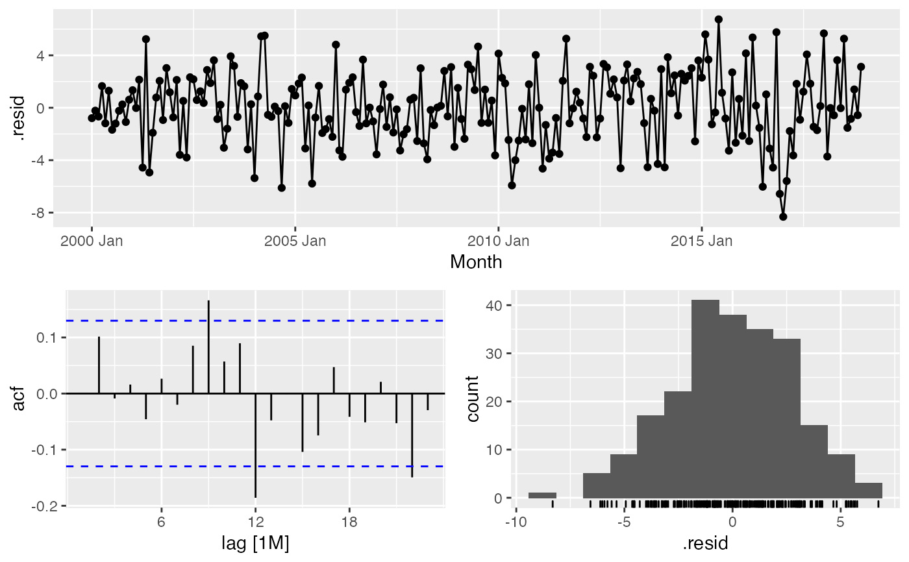

MonthModelPicker.RdFunction to choose optimal forecast model for monthly data
MonthModelPicker(data, Outcome, DateVar, H.Horizon = 14)
| data | A monthly tsibble. |
|---|---|
| Outcome | A valid variable name for the Outcome to be modelled in in `data`. |
| DateVar | A valid variable name for the time index in `data`. |
| H.Horizon | An integer for the forecast horizon/test subset of `data`. |
A list containing:
Accuracy.Table: accuracy for the forecast horizon against the test sample.
test: the test set
train: the training set
Model.Fits: the model fits
Model.Forecasts: the forecasts
Min.Model: the minimum model by MAE
Min.Report: the minimum model report
Min.Res.Plot: the gg_tsdisplay for the minimum model
Min.Forecast.Plot: a plot of the minimum forecast by MAE
#> Warning: Current temporal ordering may yield unexpected results. #> ℹ Suggest to sort by ``, `Month` first.#>#> Warning: Current temporal ordering may yield unexpected results. #> ℹ Suggest to sort by ``, `Month` first.#> Warning: Current temporal ordering may yield unexpected results. #> ℹ Suggest to sort by ``, `Month` first.#> Warning: Current temporal ordering may yield unexpected results. #> ℹ Suggest to sort by ``, `Month` first.#> Series: MaxAvg #> Model: COMBINATION #> Combination: (MaxAvg + MaxAvg) * 0.5 #> #> ==================================== #> #> Series: MaxAvg + MaxAvg #> Model: COMBINATION #> Combination: MaxAvg + MaxAvg #> #> ============================ #> #> Series: MaxAvg #> Model: ARIMA(1,0,0)(1,1,0)[12] w/ drift #> #> Coefficients: #> ar1 sar1 constant #> 0.2471 -0.4665 0.1588 #> s.e. 0.0663 0.0618 0.2291 #> #> sigma^2 estimated as 11.12: log likelihood=-566.58 #> AIC=1141.16 AICc=1141.35 BIC=1154.66 #> #> Series: MaxAvg #> Model: ETS(A,N,A) #> Smoothing parameters: #> alpha = 0.1817322 #> gamma = 0.0001008462 #> #> Initial states: #> l s1 s2 s3 s4 s5 s6 s7 #> 63.30714 -17.44621 -10.46094 0.6837303 12.23725 18.48901 18.54583 11.03021 #> s8 s9 s10 s11 s12 #> 5.147654 -1.775394 -7.626994 -12.27733 -16.54682 #> #> sigma^2: 7.0556 #> #> AIC AICc BIC #> 1698.915 1701.179 1750.355 #> #>#> $test #> # A tsibble: 12 x 7 [1M] #> MO YR MaxAvg MinAvg Precip Snow Month #> <int> <int> <dbl> <dbl> <dbl> <dbl> <mth> #> 1 12 2019 48.1 38 4.39 0 2019 Dec #> 2 11 2019 54.4 39.2 1.52 0 2019 Nov #> 3 10 2019 60.8 42.1 1.51 0 2019 Oct #> 4 9 2019 72.1 56.8 3.85 0 2019 Sep #> 5 8 2019 82.6 60.9 1.23 0 2019 Aug #> 6 7 2019 80.3 60.3 0.8 0 2019 Jul #> 7 6 2019 76.6 54.8 0.45 0 2019 Jun #> 8 5 2019 72.7 51.6 1.51 0 2019 May #> 9 4 2019 62.6 46.1 2.98 0 2019 Apr #> 10 3 2019 56.6 36.7 1.54 0 2019 Mar #> 11 2 2019 42.9 32.2 4.1 6.5 2019 Feb #> 12 1 2019 49.2 37.1 2.79 0 2019 Jan #> #> $train #> # A tsibble: 228 x 7 [1M] #> MO YR MaxAvg MinAvg Precip Snow Month #> <int> <int> <dbl> <dbl> <dbl> <dbl> <mth> #> 1 1 2000 45.1 34.5 5.66 1 2000 Jan #> 2 2 2000 50.2 37.1 4.5 0 2000 Feb #> 3 3 2000 53.9 37.3 3.21 0 2000 Mar #> 4 4 2000 64.1 43.9 1.82 0 2000 Apr #> 5 5 2000 66.0 49.1 2.7 0 2000 May #> 6 6 2000 76.4 54.1 1.19 0 2000 Jun #> 7 7 2000 78.4 57.2 0.15 0 2000 Jul #> 8 8 2000 78.6 56.9 0.12 0 2000 Aug #> 9 9 2000 73.9 53.9 1.67 0 2000 Sep #> 10 10 2000 63.2 47.2 3.25 0 2000 Oct #> # … with 218 more rows #> #> $Model.Fits #> # A mable: 1 x 10 #> `K = 1` `K = 2` #> <model> <model> #> 1 <LM w/ ARIMA(0,1,5) errors> <LM w/ ARIMA(0,1,1) errors> #> # … with 8 more variables: K = 3 <model>, ARIMA <model>, ETS <model>, #> # NNET1 <model>, NNET2 <model>, NNET3 <model>, prophet <model>, #> # Combo1 <model> #> #> $Model.Forecasts #> # A fable: 120 x 4 [1M] #> # Key: .model [10] #> .model Month MaxAvg .mean #> <chr> <mth> <dist> <dbl> #> 1 K = 1 2019 Jan N(48, 11) 48.1 #> 2 K = 1 2019 Feb N(51, 12) 50.6 #> 3 K = 1 2019 Mar N(57, 12) 56.9 #> 4 K = 1 2019 Apr N(65, 12) 64.8 #> 5 K = 1 2019 May N(73, 12) 73.2 #> 6 K = 1 2019 Jun N(80, 13) 79.9 #> 7 K = 1 2019 Jul N(83, 13) 82.9 #> 8 K = 1 2019 Aug N(81, 14) 81.1 #> 9 K = 1 2019 Sep N(75, 15) 75.1 #> 10 K = 1 2019 Oct N(67, 15) 66.6 #> # … with 110 more rows #> #> $Accuracy.Table #> # A tibble: 10 x 10 #> .model .type ME RMSE MAE MPE MAPE MASE RMSSE ACF1 #> <chr> <chr> <dbl> <dbl> <dbl> <dbl> <dbl> <dbl> <dbl> <dbl> #> 1 ARIMA Test -1.32 3.20 2.55 -2.01 4.21 NaN NaN 0.0525 #> 2 Combo1 Test -1.78 3.45 2.37 -3.02 4.02 NaN NaN -0.0668 #> 3 ETS Test -2.23 3.97 2.64 -4.02 4.62 NaN NaN -0.0806 #> 4 K = 1 Test -2.41 3.50 2.85 -4.32 5.00 NaN NaN -0.357 #> 5 K = 2 Test -2.17 3.93 2.75 -3.91 4.77 NaN NaN -0.0567 #> 6 K = 3 Test -2.18 3.93 2.73 -3.92 4.73 NaN NaN -0.0556 #> 7 NNET1 Test -1.90 4.27 3.21 -3.50 5.78 NaN NaN -0.0426 #> 8 NNET2 Test -1.82 4.69 3.53 -3.46 6.42 NaN NaN -0.0101 #> 9 NNET3 Test -1.83 5.12 3.70 -3.51 6.76 NaN NaN -0.0639 #> 10 prophet Test -2.28 4.30 3.03 -4.09 5.24 NaN NaN -0.0119 #> #> $Min.Model #> # A tibble: 1 x 10 #> .model .type ME RMSE MAE MPE MAPE MASE RMSSE ACF1 #> <chr> <chr> <dbl> <dbl> <dbl> <dbl> <dbl> <dbl> <dbl> <dbl> #> 1 Combo1 Test -1.78 3.45 2.37 -3.02 4.02 NaN NaN -0.0668 #> #> $Min.Report #> # A mable: 1 x 1 #> Combo1 #> <model> #> 1 <COMBINATION> #> #> $Min.Res.Plot #>